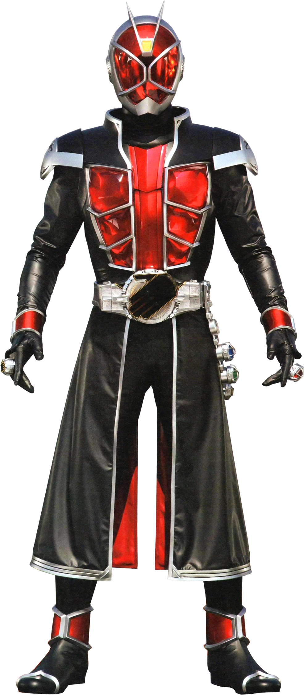

My name is Toni Graham and this is my project for CSC 340 Software Engineering. The purpose of this website is to showcase a collection of characters from the Kamen Rider franchise. My main interests include:
The reason why I chose the Kamen Rider theme is because I'm a huge fan of Kamen Rider and wanted to show off my favorite characters. Kuuga especially is my favorite, him being one of my most liked seasons that I watched from the series. For this website I chose to keep the UI and CSS very simple to help the characters stand out more.
